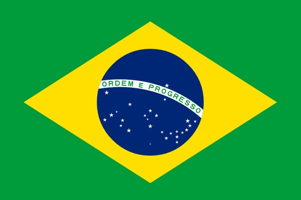

브라질

브라질 연방공화국(브라질 포르투갈어: República Federativa do Brasil 헤푸블리카 페데라치바 두 브라지우),
줄여서 브라질(브라질 포르투갈어: Brasil 브라지우)은 남아메리카에 위치한 연방제 공화국이다.
수도는 브라질리아이고, 최대 도시는 상파울루이다.
브라질은 남아메리카에서 가장 큰 나라로, 세계에서 다섯 번째로 면적이 넓고 인구도 2억 명이 넘어 세계에서 다섯 번째로 인구가 많은 나라이다.
아메리카 대륙에서는 유일하게 포르투갈어를 공용어(브라질 포르투갈어)로 사용하고 있으며, 국내 총생산(GDP) 순위는 세계 8위이다.
해안 지역에 집중된 인구를 분산시키기 위하여 19세기 초에 포르투갈의 수도이기도 했던 남서부 해안의 리우데자네이루에서 1960년에 중부 내륙의 브라질리아로 수도를 옮겼다.
삼바와 카니발의 본고장이며, 축구 강국으로도 유명하다.